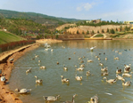
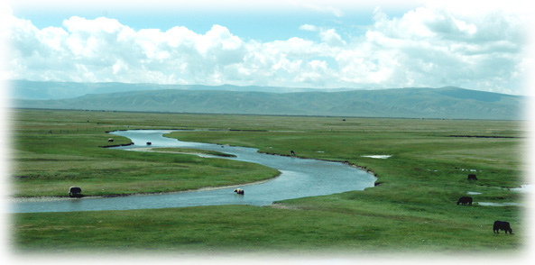
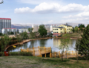
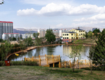
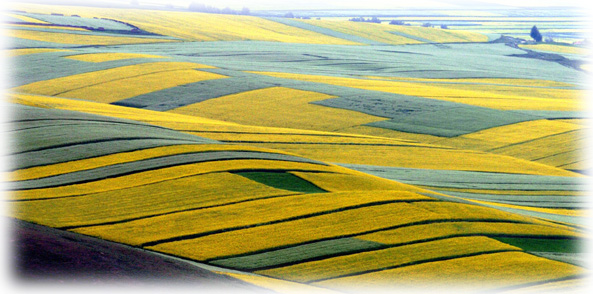
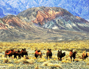
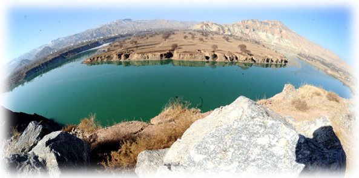

文学作品
（1）古代作品：
从军行青海长云暗雪山
王昌龄
青海长云暗雪山， 孤城遥望玉门关。
黄沙百战穿金甲， 不破楼兰终不还。

兵车行
杜甫
车辚辚，马萧萧，行人弓箭各在腰。
耶娘妻子走相送，尘埃不见咸阳桥。
牵衣顿足拦道哭，哭声直上干云霄。
道旁过者问行人，行人但云点行频。
或从十五北防河，便至四十西营田。
去时里正与裹头，归来头白还戍边。
边庭流血成海水，武皇开边意未已。
君不闻汉家山东二百州，千村万落生荆杞。
纵有健妇把锄犁，禾生陇亩无东西。
况复秦兵耐苦战，被驱不异犬与鸡。
长者虽有问，役夫敢申恨？
且如今年冬，未休关西卒。
县官急索租，租税从何出？
信知生男恶，反是生女好。
生女犹得嫁比邻，生男埋没随百草。
君不见青海头，古来白骨无人收。
新鬼烦冤旧鬼哭，天阴雨湿声啾啾。

（2）现代作品：
青海高原一株柳
陈忠实
这是一株柳树，一株在平原在水边极其普通极其平常的柳树。
这是一株神奇的柳树，神奇到令我望而生畏的柳树，它伫立在青海高原上。
在青海高原，每走一处，面对广袤无垠青草覆盖的原野，寸木不生青石嶙峋的山峰，深邃的蓝天和凝滞的云团，心头便弥漫着古典边塞诗词的悲壮和苍凉。走到李家峡水电站总部的大门口，我一眼就瞅见了这株大柳树，不由的“哦”了一声。
这是我在高原见到的惟一的一株柳树。我站在这里，目力所及，背后是连绵的铁铸一样的青山，近处是呈现着赭红色的起伏的原野，根本看不到任何一种树。没有树林的原野尤其显得简洁而开阔，也显得异常的渺茫和苍凉。这株柳树怎么会生长起来壮大起来，怎么就造成高原如此壮观的一方独立的风景？
这株柳树大约有两合抱粗，浓密的枝叶覆盖出大约百十余平方米的树荫；树干和枝叶呈现出生铁铁锭的色泽，粗砺而坚硬；叶子如此之绿，绿得苍郁，绿得深沉，自然使人感到高原和缺水对生命颜色的独特锻炼；它巍然撑立在高原之上，给人以生命伟力的强大的感召。
我便抑止不住猜测和想像：风从遥远的河川把一粒柳絮卷上高原，随意抛撒到这里，那一年恰遇好雨水，它有幸萌发了。风把一团团柳絮抛撒到这里，生长出一片幼柳，随之而来的持续的干旱把这一茬柳苗子全部嫩抉了，只有这一株柳树奇迹般地保存了生命。自古以来，人们也许年复一年看到过一茬一茬的柳树苗子在春天冒出又在夏天旱死，也许熬过了持久的干旱却躲不过更为严酷的寒冷，干旱和寒冷绝不宽容任何一条绿色的生命活到一岁，这株柳树就造成一个不可思议的奇迹，千年奇迹万年奇迹，无法猜度它是否属于一粒超级种子？
我依然沉浸在想像的情感世界：长到这样粗的一株柳树，经历了多少次虐杀生灵的高原风雪，冻死过多少次又复苏过来：经历过多少场铺天盖地的雷轰电 殛，被劈断了枝干而又重新抽出了新条；它无凝经受过一次摧毁又一次摧毁，却能够一回又一回起死回生，这是一种顽强一种侥幸，还是有神助佛佑？
我家乡的灞河以柳树名贯古今，历代诗家词人对那里的柳枝柳絮倾洒过多少墨汁和泪水。然而面对青海高原的这一株柳树，我却崇拜到敬畏的情景了。是的，家乡灞河边的柳树确有引我自豪的历史，每每念诵那些折柳送别的诗篇，都会抹浓一层怀念家园的乡情。然而，家乡水边的柳枝却极易生长，随手折一条柳枝插下去，就发芽生长，三两年便成为一株婀娜多姿风情万种的柳树了；漫天飞舞的柳絮飘落到沙滩上，便急骤冒出一片又一片芦苇一样的柳丛。青海高原上的这一株柳树，为保存生命却要付出怎样的难以想像的艰苦卓绝的努力？同是一种柳树，生活的的道路和生命的命运相差何其远！
这株柳树没有抱怨命运，也没有畏怯生存之危险和艰难，更没有攀比没有嫉妒河边同族同类的鸡肠小肚，而是聚合全部身心之力与生命环境抗争，以超乎想象的毅力和韧劲生存下来发展起来壮大起来，终于造成了高原上的一方壮丽的风景：命运给予它的几乎是九十九条死亡之路，它却在一线希望之中成就了一片绿荫。
我崇拜这株高原柳树。
 

青海湖，梦幻般的湖
冯君莉
我们同启明星一起上路了。和我们一起上路的，还有那各种各样的扑朔迷离的关于高原的梦。
汽车在青藏公路上行驶，但没有往日的颠簸。窗外，是一片漆黑和寂静，细细的雨丝斜打在车窗玻璃上，雨丝中夹杂着几声遥远的犬吠。我在轻轻的摇晃中，又接上了刚才的温暖的兵站未完的梦。
……黄色的山峰，黄色的波涛，我在翻卷的波涛中吃力地游着，几乎抵挡不住一个又一个更高的浪峰……波涛忽然间平息了，变成一片灰色的死海，真大呀，无边无沿的，这是茫茫的戈壁。我又吃力地走着，干渴疲乏，几乎拉不开双腿。那是什么？天边一片朦胧的绿色，树木在摇，溪水在淌，岸上有房子，房子像在走动。这究竟是沙漠绿洲，还是海市蜃楼？去，看看究竟，可是，怎么也迈不开腿了……
身子猛地朝前一倾，我从睡梦中惊醒，不解地望着身旁年轻的司机。这个自从上路就没有说过几句话的铁道兵战士，此时轻轻地说了声：
“青海湖到了，下车看看吧！”
梦境的继续
我扑向七月的清晨，深深地呼吸着雨后甜润的空气。瞬间，我惊住了，像是无意中扑进了一幅巨大的画卷，失去了中心和方向。我的眼前，一片镶着露珠的绿茵茵的草滩，草滩上生长着一垄垄黄灿灿的油菜花，在这绿色和黄色的背后，又衔接着一派无边无际的蓝色湖水。那草滩的绿，绿得娇嫩，那菜花的黄，黄的蓬勃，而那湖水的蓝，又是蓝得多么醉人啊！它蓝似海洋，可比海洋要蓝得纯正；它蓝似天空，可比天空蓝的深沉。青海湖的蓝，蓝得纯净，蓝的深湛，也蓝得温柔恬雅。那蓝锦缎似的湖面上，起伏着一层微微的涟漪，像是淌未凝固的玻璃浆液，又像是白色种的小姑娘那水灵灵、蓝晶晶的眸子。正当我折服这蓝色的魅力，而又苦于找不到恰当比喻的时候，突然记起少数民族对青海的称呼。在蒙语里，它被叫作“库库诺尔”，在藏语里，它被叫作“错温布”，都是“青颜色的大海”之意。为什么要叫做“青色的海”、而不叫做“蓝色的海”呢？莫不是出于“青出于蓝而胜于蓝”的俗语？其实，青海湖水所以如此湛蓝，因为湖面高出海面三千一百九十七米，比两个泰山还高，湖水中含氧量较低，浮游生物稀少，含盐量在百分之零点六左右，透明度达到八九米以上，因而，湖水就显得更晶莹明澈。我明白了，难怪青海湖水要比其它的蓝色显得美，更醉人呵！
再顺眼望去，在青海湖所能目极的尽头，在水天相连的地方，是一道尚未退却的乌云，它翻滚着，好似奔腾的骏马。再往上，就是那雨后所特有的万里晴空了。这淡蓝色的苍穹一直伸展到我的身后，垂向一片碧绿的草滩，草滩上伫立着连绵起伏的褐色的山峦。而我的脚下，银色的公路像是一条哈达，逶迤着伸向遥远的地方……一幅多美的画卷啊！而这其中的一切，又都浸透了黎明的生气，浸透了晨雨的滋润，显得这么清新，这么幽静。那晶莹的雨珠隐隐约约地闪露在草丛中、花瓣里、湖面上，以及山峦顶端和空气的分子之间，只要轻轻地吸一口空气，甜丝丝的，凉爽爽的。我几乎醉了，想跑，怕破坏这画卷的安谧；想喊，又怕惊动这画卷的宁静。我看着不远处那位年轻的司机，他仍旧那么肃穆，默默地望着远处一个地方，丝毫没有交流感情的意思，而草滩上那几匹漫步的牦牛，更是分外的悠闲。我只有独自默默地伫立着，任大脑在美中陶醉，任心潮在美中起伏。我曾经领略过西湖的妩媚，东湖的清丽，南湖的庄严，太湖的辽阔，以及鄱阳湖的帆影，玄武湖的桨声，昆明湖的笑语……可是此时，也许是偏爱的缘故，我却被青海湖的质朴所震慑，原先那些华丽的感慨被一股大自然的魅力所推翻了。我幻想着，当年大自然这真正的造物主在创造青海湖的时候，面对偌大一块画帘，一定毫无犹豫地甩下那些精细的刻刀，酣畅淋漓地挥舞着最大的画笔，一抹黄，一抹绿，一抹蓝……大笔泼洒勾勒，因此，留下的这没有丝毫粉饰和雕琢的湖，留下这粗犷的美，自然的美，质朴的美。
谁说一见钟情总是轻浮的呢？在某种机缘下，突然遇见自己或朦胧向往或苦苦追求而未能获得的美好的事物，怎能不一见生情呢？
是啊！我不曾领略过如此醉人的美，我甚至怀疑这是否又是那高原奇特的梦，是那梦境的继续？
梦一般的传说
阳光越来越明媚，那蓝色的镜面上摇遥曳曳倒映出三五个岛屿的轮廓，也似乎倒映出那许许多多关于青海湖的神话传说。有的说，这是当年东海老龙王最小的儿子引来一百零八条江河的水，汇成这浩瀚的西海，因此他成为西海龙王；有的说，这是当年文成公主在进藏途中，行至日月山口，回首汉宫，思念之情油然而生，禁不住潸然泪下，泪水汇迈蓝色的湖，随后，文成公主又毅然决然地上路上；还有的说，这是当年孙悟空大闹天宫，把二郎神追赶得逃到这里，二郎神又饥又渴，发现了这个神泉……
仅仅这些神话般的传说，就有多么迷人啊！而蓝色湖面上那微微泛动的波澜，又似乎在悄声叙说着青海湖遥远的历史，变迁的过程：早在二亿三千万年以前，这里整个是一片浩瀚的古海，甚至和现在的太平洋连在一起，后来，在一次强烈的“造山运动”中，喜马拉雅山的隆起把全部海水逼走，古海变成了内陆盆地。又经过一段漫长的岁月，一些河流、湖泊和沼泽形成了这个青海湖，然而那时它还是“活”的，它的水流入黄河。到了大约距今十三万年，在地质学上称为“第四纪”的时候，又一次地壳运动，一下子把青海湖的出口堵得严严实实了。那条输出湖水的河流也来了个首尾大掉头，倒流入湖了，这就是我国罕见的，自东向西的倒淌河。至于青海湖中的海心山、海西山、海东山、石义岛，以及那驰名中外，像一尾顽皮的黑蝌蚪似的鸟岛，娓娓动听的传说就更多了。这是鸟儿的世界，是个绝妙的世外桃源，不然，为什么会一年又一年地吸引着数万至数十百千万不同种类的水鸟呢？那红的、蓝的、花的鸟儿，甚至那洁白的天鹅、美丽的凤头潜鸭、欢快的云雀、优雅的黑颈鹤都年复一年地从我国江南，从东南亚、尼泊尔，从印度，飞到这里，在这里飞旋荡漾，悠然自鸣，在这里安家落户，繁衍后代。只有这神奇、美丽、和平的得天独厚的地方，才能够成为生气勃勃的鸟的世界，成为繁荣昌盛的鸟的王国啊！还有那满湖欢快地畅游着的鱼儿，恐怕谁也说不清究意有多少储量吧。据说，到了盛夏时节，一群群，一层层的鱼儿自由自在地浮游着，金灿灿，红艳艳，美极了。有这样一个真实的故事：一次捕鱼队拉网捕鱼，网特别重，全体人员都上了阵还拉不动。最后不得不将十匹马也派到“前线”，才把网拖了上来。一称，足有三万多斤。就是在用机船捕鱼的今天，也必须两艘大船协同作业，“四万斤鱼一网拉”，那是常有的事，而到了冬天呢，只要在冰面上凿开一个个洞，然后在洞口点燃篝火，那成群结队的鱼儿便会飞快地涌来，一条条自动地从洞口跃出，这就是脍炙人口的青海“冰鱼”呢。那情景，那气氛，该会换来多么欢畅的笑声。
谁能相信这是大自然的现实而不是大胆的梦幻呢？
这梦一般的传说，梦一般的景色啊！
追求，而不是沉湎于梦境
我们沿着绿色的草滩，沿着蓝色的湖畔，继续赶路了。尽情的美的欣赏，已使人从虚无缥缈的梦境中彻底解脱出来，我拉开车窗的玻璃，留恋地朝外看着，想把青海湖的美，深深地印在心里。此时此刻，我产生了一种深深的遗憾和惋惜的心情，如此一个美丽的湖泊，竟默默地珍藏在如此遥远的地方。我真想告诉所有的人们，都来观赏青海湖独特的美，都来领略这大自然的魅力。但是，我又很矛盾，我不敢想象，当成千上万的钞票像一条支流似地流向青海湖，青海湖畔因此而筑起西式的小楼，撑起遮阳的花伞，荡起阿波罗乐曲的时候，今天这醉人的青海湖会变成一种什么景象呢？不，这是让它自然而然地生存吧。现代文明固然是一种不可阻挡的潮流，然而美的领域，是不是应该留下一席原始的纯自然的位置呢？因为审美是有差异的，时髦女郎虽然引人注目，而清雅自然的少女也不令人爱慕么？
比如，我身旁这位年轻的司机，不就偏爱这种纯真的美吗？虽然他现在仍然是一脸肃穆的表情，可我不再觉得他陌生和冷峻了，倒隐隐地感觉到我们心灵之间相通的东西，我感谢这“严肃”的大兵，把我引向美丽的青海湖，引向这令人陶醉的美。我知道，他是用一种独特的方式，把自己所喜爱的东西介绍给旁人，否则，我不是仍在梦中去寻求那永远无法到达的海市蜃楼吗？是他将我从梦中唤醒，告诉我，真正的美就在人间，就在地上，即便你至今尚未发现，然而它却实实在在地存在着。要珍惜、要觅寻，不要错过，更不要在梦中追求。我会再来的，青海湖。

(3)我的小作
青海湖行记
余观夫青海湖，洪洪洋洋，吞吐日月，不见涯泄，皇哉大矣。江南之湖与之相比，则如吴娃越女，纵有轻灵之气，却似小家碧玉，未具博浩之风。然其独缺翰墨之美，余窃愤焉，敢忘不才，述而记之。
斯湖也，四时之景不同，乐亦无穷；一日之象迥异，更所未闻。
清晨之时，严风凛冽，洪波容裔，眇无垠际。忽而腾云涌烟，浊浪排空，雷声千嶂，万峰浮动，风如拨山，雨如决河，直泻琼魂，倒倾鲛室。于斯时也，湖如巨鼓，鼓声铿锵不绝，似奔马，蹄声忽骤而过。观者心惊胆寒，以手抚膺，满目萧然，唯有长叹。
雨后初霁，天光云影，和风拂面，金波如鳞。鱼龙潜跃，鸬鹚群翔。牧歌声起，心旷神怡。青罗裙带，湖中一点波心，碧毯无涯，岸边一川烟草。白顶帐篷，几处游牧人家，金黄菜花，飘香青稞奶茶。批蓑垂钓，遥望昆仑，虚无缥缈，若隐若现。白雾初下雪山，浮云直上五原，疑是瑶池仙境，恍若天上人间。人在舟中，何羡骖鸾！翼飞风以长驱，游太清以俯仰，思远古之沧海，觉宇宙之无穷。
斜阳暮霭，天地渐暝，湖面如镜，触水微凉。骚客徘徊，谁家今夜扁舟，离人感慨，何处相思明月。秦关万里，汉家烟尘，琵琶一曲肠断；铁衣远戍，金甲不脱，玉箸应啼别离。
嗟夫！余今离家千里，久别父母，坐望未名湖水，而忆故乡风物，遂起莼鲈之思，奈何归期如梦，长亭更复短亭！
 
|